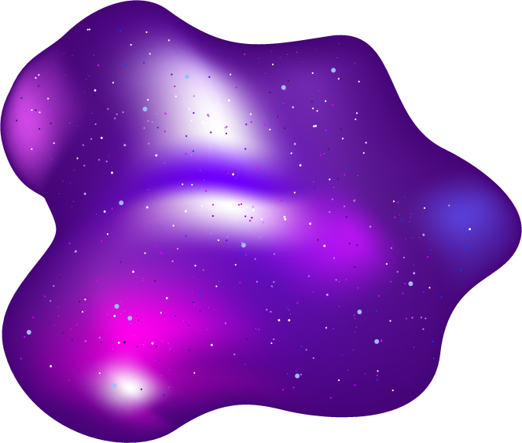

내마음의 평온을 되찾아 주는 힐링 액체괴물 만들기 프로젝트

첫째, 우주 액체괴물
우주를 닮은 액체괴물을 만들어 볼 거에요.
반짝반짝 오묘한 보라색을 가진 우주를 만들어봐요.
준비물
Step1
물과 물풀을 볼에 넣어 줘요.
물풀은 물의 1/2 정도를 넣어요.
Step2
물풀을 섞은 물에 점토를 넣어줘요.
열심히 녹여주세요.
Step3
소다를 한꼬집 정도로 아주 소량 넣어줘요.
Step4
렌즈 액을 적정량 넣어줘요.
섞어가면서 양을 조절해요.
Step5
보라색, 검정색, 파랑색, 분홍색
등의 잉크 혹은 물감을 넣어요.
Step6
파란색, 보라색 반짝이를 넣어줘요.
액체괴물을 손으로 늘려가며 반짝이를 섞어줘요